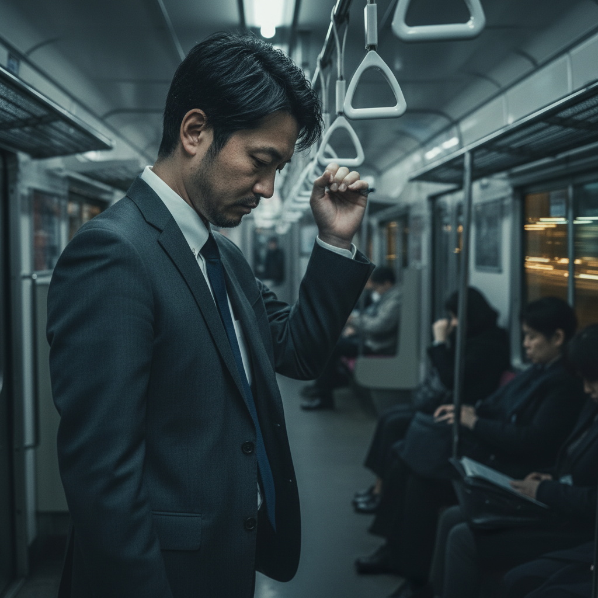
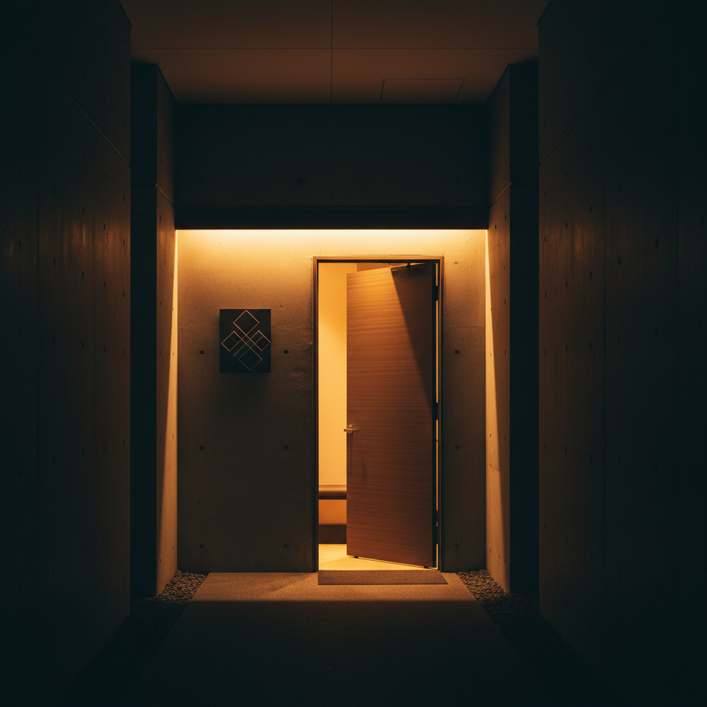
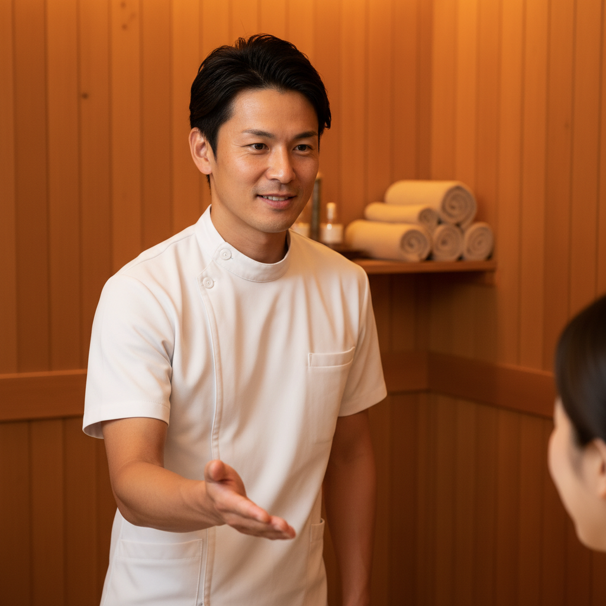
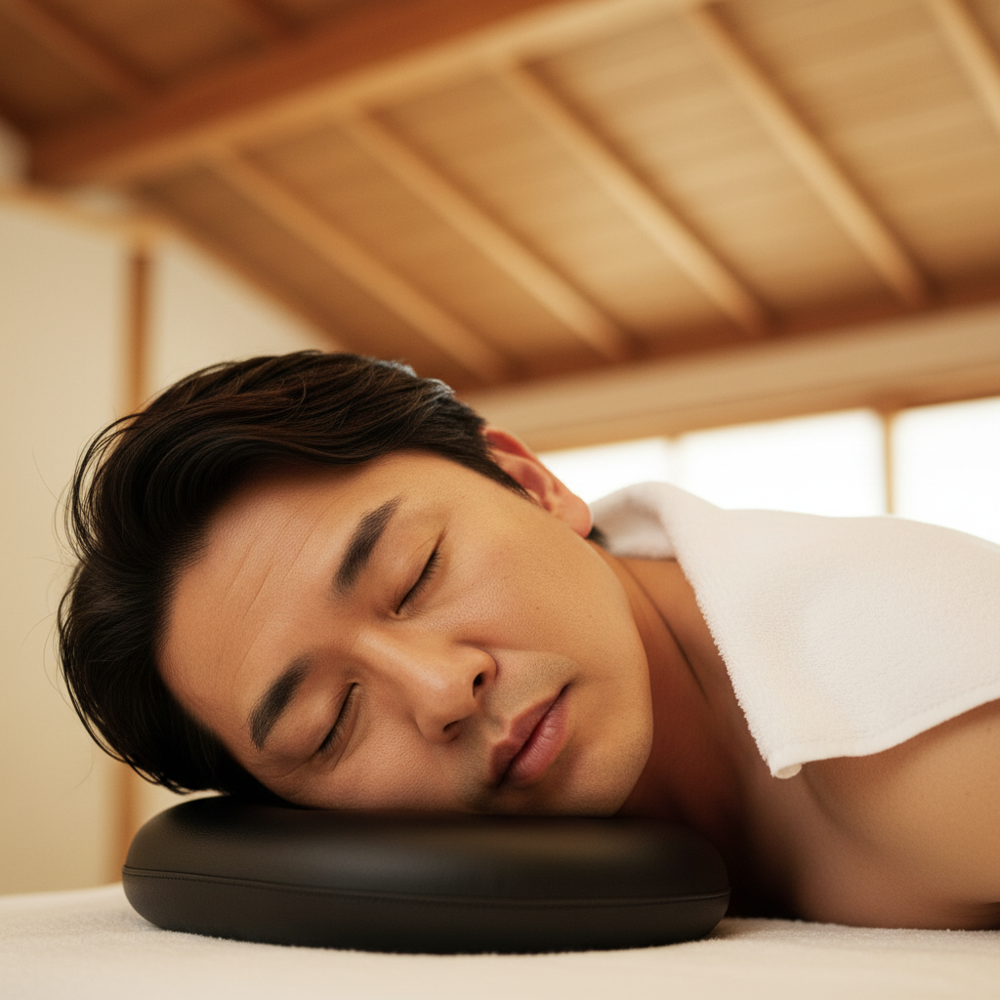
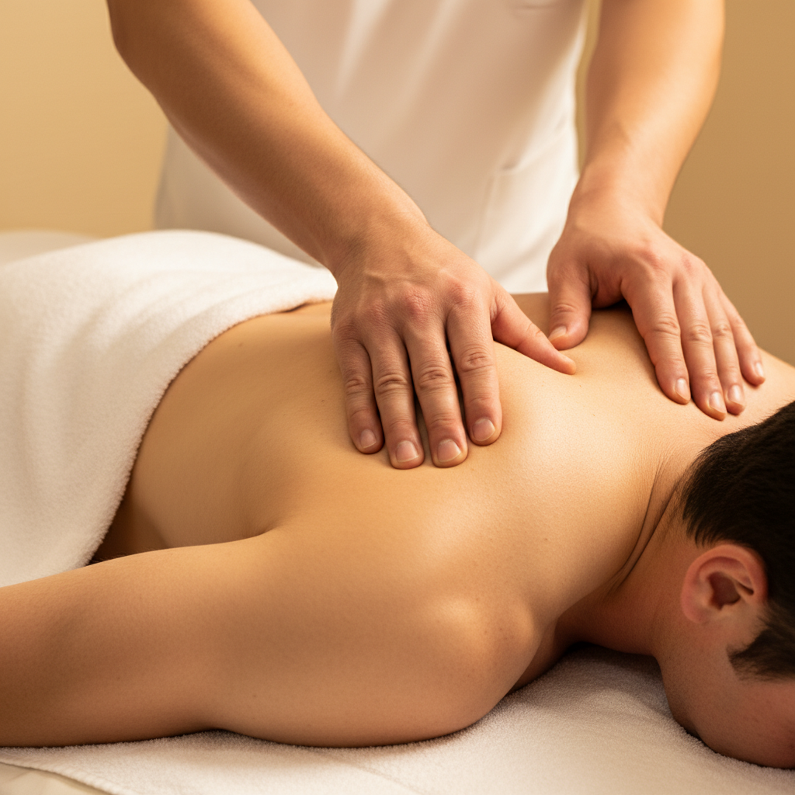
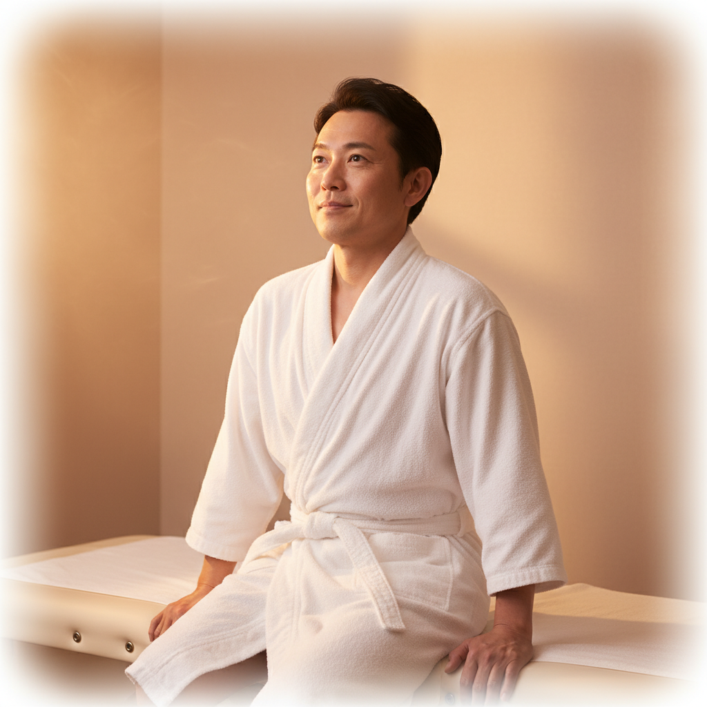

Lovers 様（活動名：南 健／本名：川上 啓二 代表）
仲野直紀『15秒！集客革命』の5要素構成・冒頭2秒Who×What・2-3秒カット割り・ベネフィット重視・3心理オファーをLoversに適用しました。バズではなく「予約獲得」に直結する設計です。
| # | 要素 | シーン | 秒数 |
|---|---|---|---|
| ① | 理想の姿（ベネフィット） | 施術後の活力ある男性＋スーツで颯爽 | 0–4s |
| ② | 悩みの共感 | 電車で疲れた男性／介護現場で肩を回す | 4–9s |
| ③ | 解決方法の提示 | Lovers店舗・施術者・施術風景 | 9–17s |
| ④ | 解決できる根拠 | 男性同士の信頼／独自手技／押し売りなし | 17–24s |
| ⑤ | オファー（3心理） | 今月限定／初回特別価格／予約CTA | 24–30s |
※ 金額は仮。南様の最終確定価格に合わせて調整します。
| メリット（NG・特徴の説明） | ベネフィット（OK・得られる未来） |
|---|---|
| 男性同士の施術 | 誰にも言えない疲労を、わかってもらえる |
| 独自の手技 | 翌朝の体の軽さが、違う |
| 60分コース | 明日からまた、自分の戦場に戻れる |
| 押し売りなし | 安心して、ただ癒される時間 |
→ ナレ・テロップは 必ずベネフィット側 を使う（仲野メソッド最重要ルール）
同業態の運営事例。共通している「暖色系の落ち着いた内装・男性セラピスト・プロフェッショナル訴求」を Lovers のクリエイティブにも踏襲します。
男性専用・男性セラピストによるタイ式オイルマッサージ。「男性同士だからこそ男の体を理解できる」を直接訴求。Loversのコンセプトに最も近い直接競合。
▼ 学べる点：男性同士訴求のコピーライティング、Webデザイン
https://masotera.jp/en/
完全個室リラクゼーションサロン。「大人の男性」をターゲットに上質さで打ち出している。日本語サイトでトンマナ・写真使い・メニュー構成が参考になる。
▼ 学べる点：上質感の演出、料金プラン設計、個室訴求
https://www.otonaspa-tokyo.com/
大阪の男性専用スパ。複数のマッサージコースを展開。Lovers配信エリア（大阪）の直接比較対象。
▼ 学べる点：関西エリアの男性専用スパの集客の打ち出し方
https://www.taiyospa.com/english/
同業態のCM・動画スタイル参考。共通する「暖色系の落ち着いたトーン」「丁寧な手技の見せ方」「言葉少なめ・映像で語る」を Lovers にも踏襲します。
南様が一番気に入った参考動画。60秒尺・29万再生という実績。男性専用×男性セラピストの直接競合動画。ナレーションなし、施術風景＋BGMで「気持ちよさ」を映像で語るスタイル。Loversが目指す最終形のリファレンス。
▼ 学べる点：60秒尺・ナレなし・施術風景主体・"Professional, non-sexual"を明示するブランドセーフティ設計
https://youtu.be/vpmNJdIjkUI
「気絶級」「脳が溶ける」など強い体感訴求のサムネコピー＋施術の音と映像で気持ちよさを語る構成。LoversのS05〜S06に通じる演出。
https://www.youtube.com/watch?v=4WNYPOSC_4U
男性専用エステ最大手の企業CM集。「男性向けに振り切ったブランディング」「シンプルなトーン」が学べる。
https://www.dandy-house.co.jp/cm/
当初の「電車内の疲れた男性」フックではなく、施術している様子そのものをフックに据える方針に変更。 「3秒で何の動画かわかる」「サービスの独自性が瞬間で伝わる」「スクロールを止める力」が強い構図を5案ご提案します。
YouTube広告では A/Bテストで2案を並走 させて、CTRが高い方を残すのが定石です。下記いずれかでご検討ください：
※ フックを変えても2秒目以降の構成（S02問題→S03解決〜）は流用可能。気になる案があれば「もう少しこういう構図で」のご指示でつぶし込み（バリエ追加生成）できます。
AI生成のイメージ画像を各シーンに当てています。前半=寒色（疲労）／後半=暖色（解放）。本制作では、南氏の人物写真を施術者の顔にブレンドし、客モデルは全シーン同一人物で固定します。

S01 0-3s
S03 6-9s
S04 9-12s
S05 12-17s
S06 17-21s
S07 21-24s総文字数：約75文字／想定読み時間：約18〜20秒
ナレーション方針：落ち着いた30〜40代男性の声（AI音声 / 声優、要ご選定）
BGM：前半=静かなピアノ／後半=温かいアコースティック
| 案 | テロップ | 想定効果 |
|---|---|---|
| A | その疲れ、引きずってませんか？ | 共感型・自分事化 ▼推奨 |
| B | 男の疲れは、男にしか分からない。 | 断定型。USPを冒頭から |
| C | 40代、抜けない疲れの理由。 | 数字型。年齢明示 |
| E | 経験した人にしか、わからない。 | 南様お気に入り。限定感・興味喚起 |